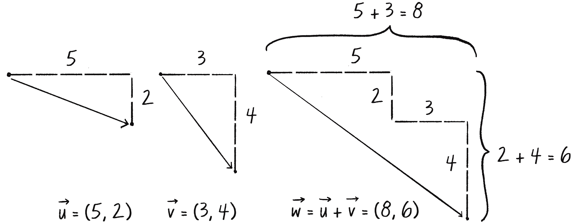
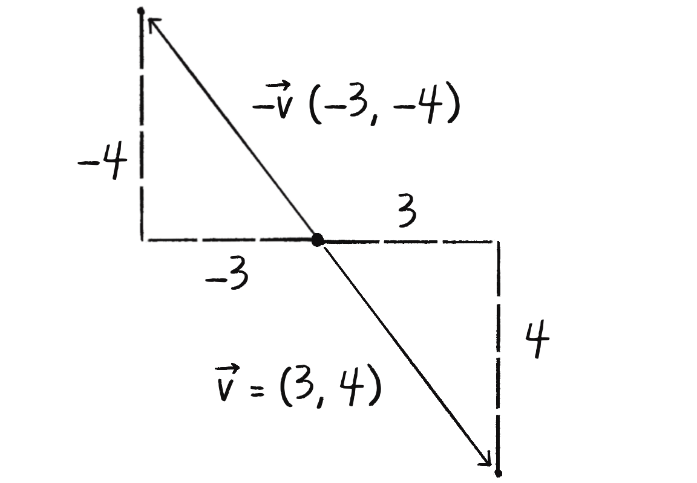
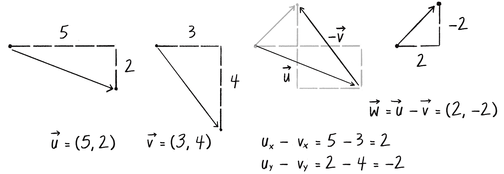

Vektör Toplama (Vector Addition)
Vektör toplama, hareketin temelidir. Bir nesnenin konumunu değiştirmek için konum vektörüne hız vektörünü ekleriz.
Matematiksel Olarak Toplama
İki vektörü toplamak için bileşenleri ayrı ayrı toplarız:
// Matematiksel toplama
let u = createVector(3, 0);
let v = createVector(0, 2);
// Yeni vektör: w = u + v
let w = createVector(u.x + v.x, u.y + v.y);
// w = (3, 2)
// VEYA p5.js add() metodu ile:
let w = u.copy(); // u'nun kopyası
w.add(v); // v'yi ekleadd() Metodu (The add() Method)
p5.Vector'ın add() metodu, vektör toplamayı çok kolaylaştırır:
let position = createVector(100, 50);
let velocity = createVector(2, 3);
// position += velocity
position.add(velocity);
// Şimdi position = (102, 53)⚠️ add() Orijinal Vektörü Değiştirir!
position.add(velocity) dediğimizde, position değişir,
velocity aynı kalır. Bu önemli - her frame'de position güncellenirken
velocity sabit kalmalı!

Hareket Kodu: add() ile
Şimdi position.x += velocity.x yerine position.add(velocity) kullanabiliriz:
Dikkat Edin:
🔬 Deneyin:
-
Satır 8: velocity değerlerini değiştirin:
createVector(5, -2)Beklenti: Farklı yönde, farklı hızda hareket
Vektör Çıkarma (Vector Subtraction)
Toplama gibi, çıkarma da bileşen bileşen yapılır:


let a = createVector(5, 3);
let b = createVector(2, 1);
// a'dan b'yi çıkar
a.sub(b); // a = (3, 2)
// İki nokta arasındaki vektör
let mouse = createVector(mouseX, mouseY);
let center = createVector(width/2, height/2);
// Merkezden fareye vektör
let direction = p5.Vector.sub(mouse, center);💡 p5.Vector.sub() - Statik Metod
a.sub(b) → a değişir
p5.Vector.sub(a, b) → yeni vektör döner, a ve b aynı kalır
Örnek: Fareye Doğru İşaret Etme
Çıkarmayı kullanarak bir noktadan diğerine "yön vektörü" bulabiliriz:
Satır Satır Açıklama:
📝 Bu Bölümün Özeti
- v.add(u): v'ye u ekle, v değişir
- v.sub(u): v'den u çıkar, v değişir
- p5.Vector.add(v, u): Yeni vektör döner, v ve u aynı kalır
- p5.Vector.sub(v, u): Yeni vektör döner, v ve u aynı kalır
- Hareket: position.add(velocity)
- Yön bulma: p5.Vector.sub(hedef, kaynak)